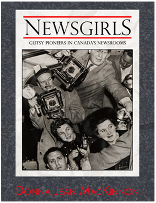

Newsgirls
Donna Jean MacKinnon
In her debut book, Donna Jean MacKinnon documents the careers of ten lady reporters who worked at newspapers between 1930 and 1960—before the Feminist Movement began. Several started out as cub reporters during World War II due to the shortage of men. They soon made their mark, in the Golden Age of Newspapers, when reportage in the dailies both informed and shaped public opinion Newshens, as they were often called then, did report on flower shows and society weddings, but they were also tough and could cover a mine disaster or a ghastly murder with the same fervour as the boys. And like the male newsies, they would fight tooth-and-nail to snag a scoop before competing newspapers got wind of a breaking story. Newsgirls such as Angela Burke and Dorothy Howarth— who, in 1949, won the first ever National Newspaper Award—often scooped the men ten ways to Sunday. In pre-feminist days, once a reporter proved her worth, there was little discrimination in Canada’s newsrooms. As one gruff editor once said, “I don’t give a damn, if it’s a man or woman behind the typewriter, it all goes out in the same truck.” In Newsgirls, each featured reporter relives the highlights of her career against a backdrop of the major news events of her day and of the people who made the news. Personal encounters with the likes of Frank Sinatra, P.M. Lester Pearson and author Robertson Davies, were all in a day’s work when print was the medium.